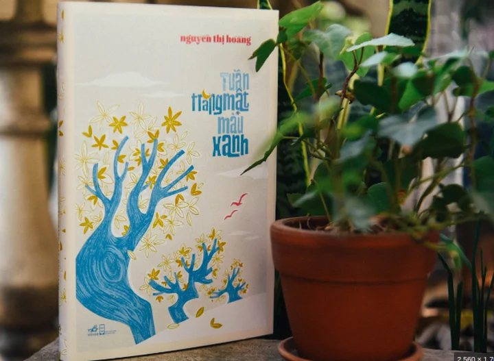
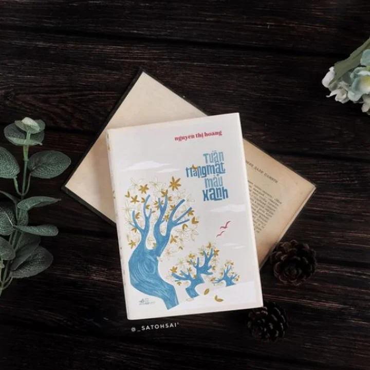

Chiến tranh! Đôi khi nó khiến chúng ta sống trong nguy hiểm, khiến chúng ta thấy ngột ngạt. Tâm trạng của những người lính dù là ở chiến tuyến nào cũng đều thế. Đọc truyện của Nguyễn Thị Hoàng ta được biết hơn, hiểu hơn tâm trạng, tâm tư và tình cảm của người lính Cộng hòa bên kia chiến tuyến, của những người dân miền Nam trước 1975. Và Tuần Trăng Mật Màu Xanh là câu chuyện về 3 con người trong nỗi ám ảnh của chiến tranh không ngớt bủa vây đời họ, bủa vây những suy nghĩ, những ước mơ của họ và những cuộc tìm kiếm cho mình một tình yêu dẫu có mỏng manh, dẫu chỉ là một chút, dẫu chỉ là "một chút đời" của họ rồi thôi.
Đông, một anh lính Cộng hòa bị thương, được cho nghỉ phép đi lang thang khắp nơi tìm chỗ trú chân. Vô tình anh lạc bước vào một căn nhà hoang trong một ngày mưa gió tại Huế. Cứ ngỡ trú chân một lúc rồi đi thì anh tình cờ gặp Ý Lan, người đàn bà cũng lang thang, chẳng biết mình đi tìm cái gì, cuộc tìm kiếm mơ hồ người chồng đang không biết ở nơi nào. Sau những bỡ ngỡ ban đầu Đông với Ý Lan bắt đầu một chút đời ở gần nhau nhanh qua như cơn gió. Với Đông đó chỉ là chơi bời, một kiểu one night xong rồi thôi, cho tới khi anh bất ngờ gặp lại Nhung, người bạn gái ngày xưa và nhận ra tình yêu thực sự anh dành cho cô. Anh muốn vứt bỏ tất cả chỉ để được sống bên Nhung, được hưởng những quãng thời gian yên bình bên cô. Dù chỉ là một quãng thời gian ngắn ngủi thôi anh cũng muốn tận hưởng nó tới tận cùng. Đông muốn xây dựng gia đình với Nhung, chỉ có ở bên cô những ám ảnh chiến tranh đáng sợ mới thôi dày vò anh. Nhung chính là bến bờ tình yêu đầy màu xanh cho Đông neo đậu, anh gần như đã chuẩn bị đầy đủ để cả hai người cùng tới bến bờ xanh ấy để hạnh phúc bên nhau mãi mãi. Kể cả trốn phép, kể cả liều mạng đi lấy vòng và nhẫn cưới về cho Nhung xem, bất chấp sẽ bị bắt vì trốn phép. Hình ảnh cuối cùng khi Đông vẫn từng bước, từng bước đi thong thả mặc cho xe jeep huýt còi bắt anh dừng lại xuất trình giấy phép, không sẽ bị bắt lính khiến mình thấy đau xót. "Một chút đời" của Đông chính là Nhung.

Ý Lan, người phụ nữ trung niên từ Sài Gòn bay vào Huế đi tìm tung tích người chồng tên Vĩnh. Ý Lan vô tình gặp Nhung trên chuyến bay, hai bên cùng nói chuyện mới biết Nhung đang có căn biệt thự bỏ hoang ở Huế đang cần bán. Sẵn dịp Ý Lan cũng chưa có chỗ trú chân nào cả, Nhung ngỏ ý cho Ý Lan tạm trú trong nhà mình cho đến khi cô phải đi gấp, xong việc sẽ quay về bàn chuyện bán nhà. Ý Lan đành nhận lời. Mang trong mình một tâm thế bất cần, lang thang, táo bạo, ương ngạnh Ý Lan lại vô tình gặp Đông đang trú mưa trong nhà của Nhung. Thấy Đông là gã lính quèn đang chán đời, sống không biết ngày mai, thô lỗ, cộc cằn, Ý Lan ban đầu không ưa lắm nhưng rồi dần dần thấy mến anh, rồi yêu anh lúc nào không biết. Đặc biệt khi Ý Lan bị sốt do phải dầm mưa, không có quần áo thay vì va li Nhung vẫn cầm, cả hai người đã ủ ấm cho nhau qua được đêm mưa rét buốt trong căn nhà xiêu vẹo. Từ đêm ấy Ý Lan biết mình đã yêu Đông, nhẽ ra mối tình ấy đã đẹp, như bà mơ mộng, nếu không có Nhung. Biết tình cảm của Đông chẳng dành cho mình, biết mình là kẻ thứ ba, nhưng Ý Lan không thể cưỡng được lòng mình. Vì Đông bà sẵn sàng đợi anh mấy tiếng đồng hồ ở trại quân doanh chỉ để có vài phút tự lừa mình với anh trên đò. Đông cần cả cuộc đời với Nhung, nhưng Ý Lan chỉ cần "một chút đời" vứi Đông đêm đó rồi lại quay về Sài Gòn lang bạt, bất cần như trước. Chồng chết vì chiến tranh Ý Lan không còn mục đích sống, trái tim bà chỉ còn có Đông nhưng chỉ là vô vọng.
Nhung, người con gái xinh đẹp, dịu hiền đang trong mối quan hệ tẻ nhạt với chồng ở Sài Gòn. Cô khao khát một thứ gì đó mới mẻ thì lại tình cờ gặp Đông trong căn biệt thự của mình. Chính Đông là người khiến Nhung sẵn sàng đánh đổi tất cả, chia tay cuộc hôn nhân cũ để bắt đầu cuộc sống mới với Đông. Cô biết Đông yêu mình thật lòng và cô cũng yêu anh tới nỗi chấp nhận bán căn biệt thư đi để lo lót cho Đông khỏi phải đi lính nữa, để xây dựng cuộc sống hạnh phúc với anh lâu dài. Nhung rất sợ chiến tranh, khiếp sợ cơn ác mộng khi Đông đi lính trở về sẽ chẳng lành lặn, chẳng còn cánh tay để ôm cô. Chuyện tình của Nhung và Đông quá đẹp nên nó mong manh. Cái hạnh phúc mong manh ấy, cái hạnh phúc nằm trong nỗi đợi chờ Đông đi lấy nhẫn về của Nhung vẫn bị chiến tranh phũ phàng dập tắt.

Ba con người, ba ước vọng tìm về hạnh phúc, dù là nhỏ nhoi, dù là ngang trái, dù là mong manh nhưng họ vẫn muốn bám víu, họ vẫn muốn vun đắp, vẫn muốn tìm về. Tuần Trăng Mật Màu Xanh của Đông là chuỗi ngày hạnh phúc với Nhung, của Ý Lan là cái đêm cuối cùng với anh trên đò. Cả ba người ai cũng phải hứng chịu nỗi đau của chiến tranh. Đôi khi họ muốn lãng quên nó đi trong những cuộc mê say, chơi vơi kiếm tìm hạnh phúc. Nhưng rồi họ vẫn phải đối mặt với nó theo nhiều cách khác nhau, khiến họ tuyệt vọng tự ru mình trong giấc mơ hạnh phúc mong manh, ngang trái. Đông muốn vứt bỏ hết kỷ luật nhà binh, vứt bỏ hết trách nhiệm của một người lính chỉ để ở bên Nhung, để được tìm về trong bến bờ tình yêu êm đềm ấy để quên đi những ám ảnh chiến tranh, những chết chóc, máu me, nhưng nỗi sợ hãi cái chết treo lơ lửng trên đầu, ghê rợn như "những đôi giày trên bãi sình," để tìm đến một nơi nào thật xanh, "Nếu anh cưới vợ, sẽ được mấy ngày phép, sẽ tới một miền xa, một miền xanh, nhiều bóng cây và trời xanh, những ý nghĩ trong hồn mình, những mơ tưởng xa vời, tương lai sẽ tới, mọi thứ cũng chỉ còn là màu xanh, màu xanh. Đã lâu lắm anh không nhìn thấy màu xanh đâu cả, ngay một nét nhạt mờ nhất trong tâm hồn mình cũng không." Nhung chỉ vì tình yêu với Đông cô cũng muốn tự giải thoát mình khỏi cuộc sống hôn nhân tẻ nhạt, yêu nhau, lấy nhau rồi chết già với Lộc. Cô sẵn sàng cùng Đông hưởng tuần trăng mật mong manh giữa ác mộng chiến tranh bủa vây. Rồi ngày mai sẽ thế nào, tương lai sẽ ra sao cô không cần biết. Chỉ cần được hạnh phúc với Đông thế là đủ rồi. Ý Lan với bản tính mạnh mẽ, ướng ngạnh, bất cần nhưng lại mang trái tim rỉ máu hai lần. Một lần khi nghe tinh Vĩnh chết trận, một lần khi biết Đông chăng dành tìm cảm cho mình. Nhưng bà vẫn chuẩn bị cả một mâm cơm trên đò, chuẩn bị một buổi tối tuần trăng mật đầy giả dối với Đông, để bám víu lấy, để tự ru mình trong nỗi êm đềm, tạm quên đi ngày mai quay về đời vô nghĩa, không còn gì để sống. Thực chất Ý Lan đã muốn chết từ lâu nếu không tình cờ gặp lại Đông. Biết rõ trong thâm tâm Đông chẳng yêu mình, nhưng chỉ cần một đêm bên Đông là tất cả những gì Ý Lan cần để tiếp tục sống, để không phải ném mình xuống sông nữa, để được sống yên bình trong "một chút đời" xanh ngắt.
Tuần Trăng Mật Màu Xanh có hơi giống Một Ngày Rồi Thôi của cùng tác giả. Cũng có 3 nhân vật đi tìm những tình yêu trái ngang có, éo le có, đẹp đẽ cũng có rồi sống chết vì nó, chỉ trong một ngày. Ở đây mỗi nhân vật cũng đều có một ngày yêu đến trọn con tim của riêng mình, kèm theo nó là những mơ ước dở dang về một hạnh phúc không bao giờ đến. Chẳng thể phán xét họ làm đúng hay sai. Đã yêu thì làm gì có sai đúng. Để chữa lành cho nhau những vết thương chiến tranh sâu hoắm, để dành cho nhau những cứu rỗi cuối củng. Một lần nữa đắm chìm văn phong của nhà văn Nguyễn Thị Hoàng, với những câu thoại ngắn ngủn, những đoạn dài khắc họa tâm lý nhân vật, với câu văn vừa lạ vừa sang trọng xen lẫn xót xa. Cốt truyện tưởng như chẳng có gì để viết nhưng bà đã vẽ nên một bức tranh phản chiến tuyệt mỹ vẽ nên những linh hồn lạc lối, bơ vơ vật lộn trong ám ảnh chiến tranh, vật lộn muốn vùng thoát khỏi tấm lưới chiến tranh bủa vây quanh mình. Đâu mới là bến đỗ bình yên cho Ý Lan, cho Nhung và Đông? Tương lai nào không còn chiến tranh dành cho ba người họ đây? Câu hỏi chẳng hề đơn giản vì đến giờ đây chiến tranh vẫn đang còn nổ ra đâu đó trên hành tinh này. Và nhân loại vẫn đang mải miết đi tìm Tuần Trăng Mật Màu Xanh!
Phải thừa nhận rằng Nhà Giả Kim là một cuốn sách thực sự đáng đọc, tôi đã dành liên tục hơn 15 giờ để hoàn thành nó và sau khi gấp quyển sách lại là một cảm giác cực kỳ thỏa mãn.
Tiếng thét dưới băng mở đầu bằng 1 vụ án mạng với phương thức gây án dã man, một thi thể nữ giới được phát hiện tại nhà của Jesper Orre, một quý ông nổi tiếng cũng như đầy tai tiếng